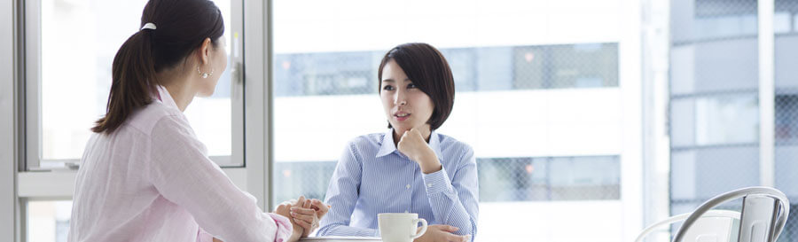

2 Creating the right environment
The environment needs to be suitable for the people who will have the challenging conversation, if at all possible. A suitable environment has several benefits. For example:
- the people having the conversation feel at ease, safer and less threatened
- if there are emotional outbursts, they are not in front of other people, such as colleagues or other customers
- they give a professional image of the organisation and its staff.
Ideally, the area needs to be:
- quiet
away from other people, distractions and excessive noise - private
so that confidentiality is not breached.
In addition to the room itself, we need to think about other things that support the meeting and improve accessibility for all. These might include, for example:
- general accessibility to the building
eg ramps, lifts, wide doors and corridors to make access simpler for people with walking difficulties or who use wheelchairs or pushchairs - assistance for people with hearing or sight difficulties
eg a quiet area away from background noise; using large print, symbols, graphics or Braille on supporting information - translation services
eg where there are legal implications, such as in a police station following arrest.
The environment can also be changed to make the meeting more challenging. For example, if the person leading the meeting needs to be in a dominant position, they can arrange the seating, lighting and so on to support their status – eg sitting in a large, comfortable chair and having the other person on a small, low chair or standing up; avoiding soft, relaxing lighting; sitting behind a large desk that acts as a barrier.